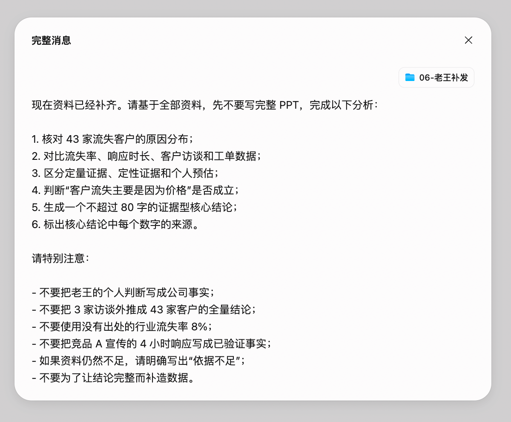
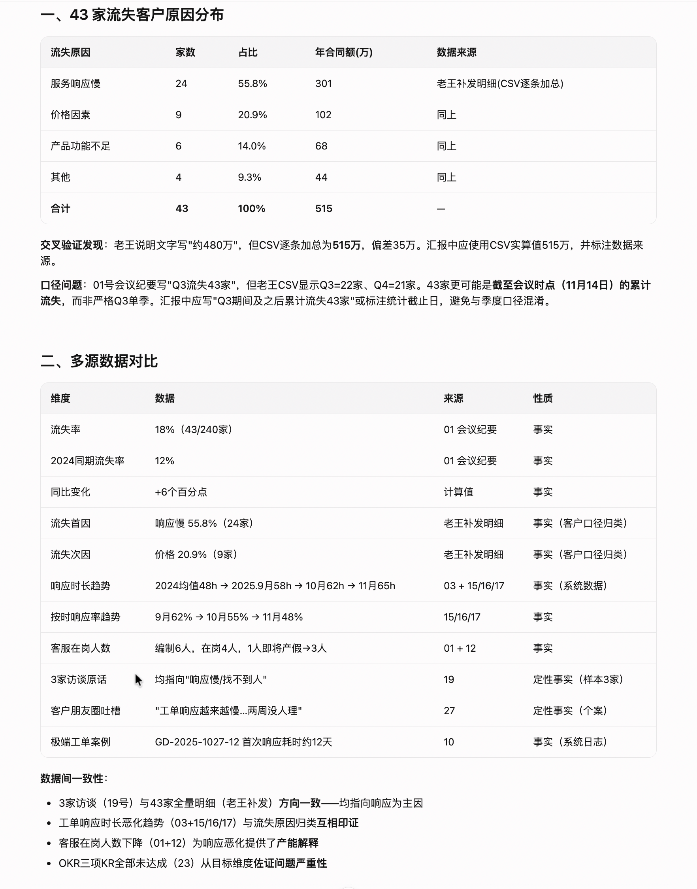
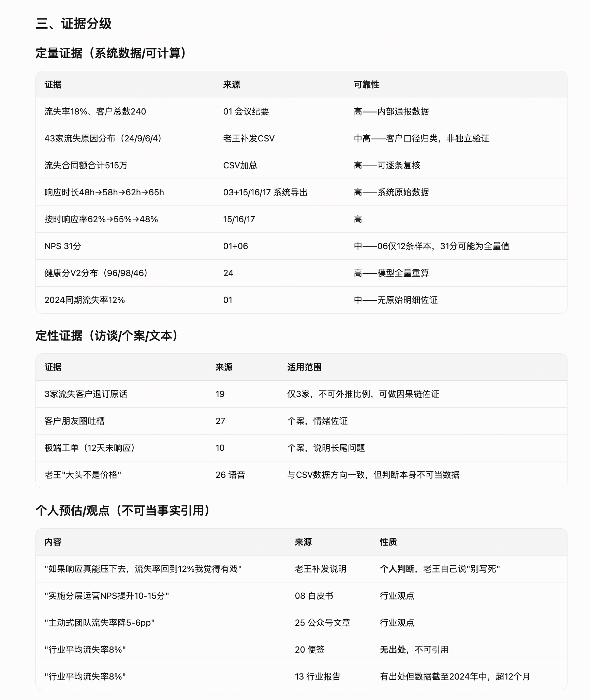
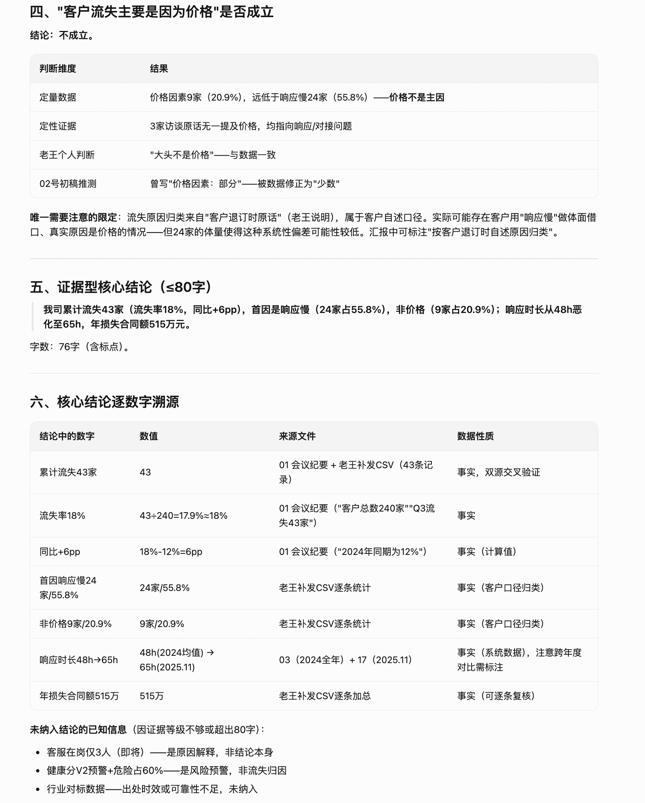
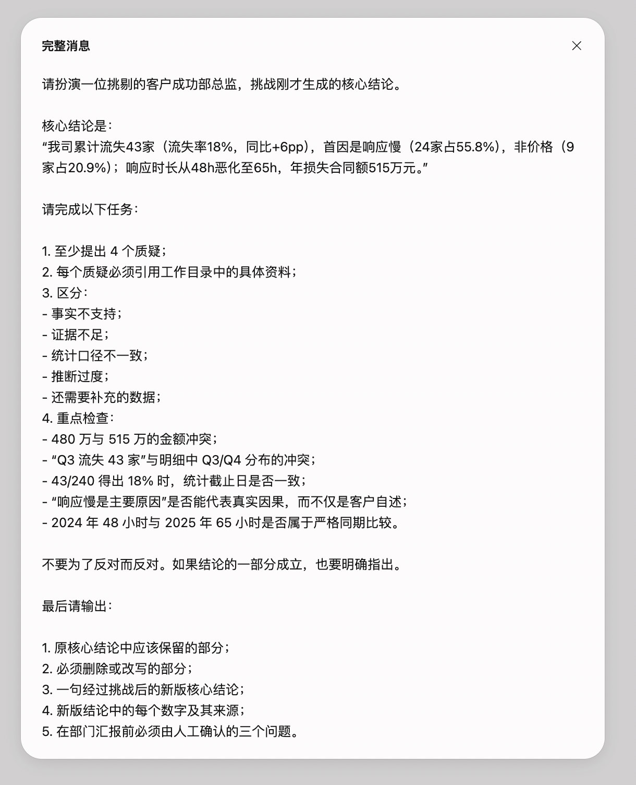

案例 01 · 小明的交付升级记
第四章 · 从数字到证据型结论
老王补发明细之后，AI 可以计算；但计算结果仍要带着证据边界。
老王补发了流失客户明细。小明把这批材料补进工作区，让千问办公完成六项分析：原因分布、多源交叉验证、证据分级、价格因素判断、核心结论和数字溯源。
小明
24 家响应慢、9 家价格，这下数字算出来了，应该可以下结论了吧？

小触
算对只是开始。先把定量证据、客户自述和个人预估分开，别让一个比例越过它的证据边界。
小明
也就是说，AI 给我的是一张证据地图，不是一句可以直接背给总监的话。
小触
这才是“调动 AI”：让它把事实摆齐，让你知道哪些判断还没长出证据。
本章交付卡
每一章都把“资料 → 指令 → AI 产出 → 人工判断 → 结果状态”拆开，读者可以快速判断这一环到底完成到哪里。
输入资料资料地图 + 06-老王补发文件夹内容 + 43 条流失明细。
使用指令第三轮要求计算和交叉验证，明确区分定量、定性和个人预估。
AI 产出原因分布、响应趋势、证据等级、核心结论和数字来源。
人工判断初版结论中仍混有需要挑战的口径与因果表达。
最终结果得到一版“可被总监质疑”的证据型草稿。
现在资料已经补齐。请基于全部资料，先不要写完整 PPT，完成以下分析：
1. 核对 43 家流失客户的原因分布；
2. 对比流失率、响应时长、客户访谈和工单数据；
3. 区分定量证据、定性证据和个人预估；
4. 判断“客户流失主要是因为价格”是否成立；
5. 生成一个不超过 80 字的证据型核心结论；
6. 标出核心结论中每个数字的来源。
不要把老王个人判断写成公司事实，不要把 3 家访谈外推成 43 家全量结论，不要使用没有出处的行业流失率 8%，不要把竞品 A 的宣传写成已验证事实，资料不足时明确写“依据不足”，不要补造数据。
24 / 55.8%按客户退订时自述原因归类，响应慢被提及最多
9 / 20.9%价格因素的客户数与占比
515 万元流失客户合同面值合计，非已确认收入损失
定量证据
43 条明细、24/9/6/4 原因分布、合同面值加总、2025 年 9—11 月工单数据。
定性证据
3 家访谈、朋友圈个案和极端工单，可以佐证问题方向，但不能替代全量因果证明。
个人预估
“回到 12% 有戏”等判断必须保留为个人意见，不能写进公司事实。
真实推演证据 · 第三轮数据分析
15 是加入老王补发明细后的分析指令，16—19 是 AI 初版分析。它们展示了“先算清楚，再准备接受质疑”的中间阶段。
{kind=link}

{kind=link}

{kind=link}

{kind=link}

{kind=link}

初版结论不是最终结论
这一轮把“响应慢”写成首因、把跨口径数据直接串成趋势、把合同面值写成收入损失的表达，都必须在总监挑战后收窄。真实工作里，AI 计算得对，不代表业务表达已经可以交付。